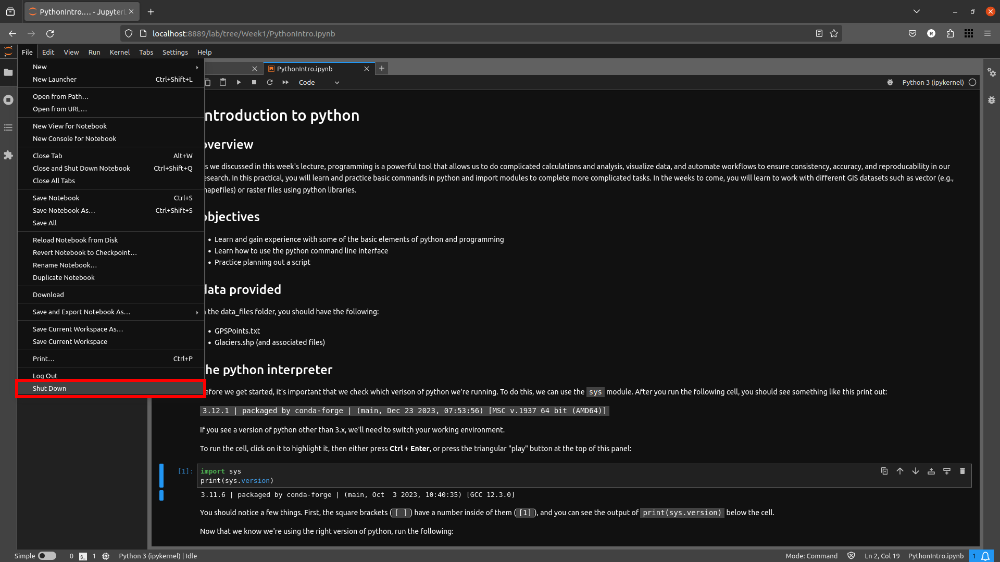

intro to python
Contents
intro to python#
To get started in the world of programming using python, we will use Jupyter Notebooks, which provide a way for creating and sharing documents that have interactive code snippets alongside narrative text, images, and more.
Getting Started#
Note
Make sure that you have installed all of the preliminary steps before continuing - you should already have installed Anaconda and git. You should also have forked the course repository and cloned it to your computer. If any of these steps sound unfamiliar, stop now and go back over the ‘Getting Started’ section of the module on Blackboard.
To start, open Anaconda Navigator and ensure that your environment is set to the egm722 environment created during the
preliminary setup (you should see “Applications on egm722” at the top of the window).
To open Jupyter Notebooks, we can either launch the CMD.exe Prompt, or launch Jupyter Notebooks directly:

I will provide instructions below for both methods; you will only need to do one of them.
Method 1: Command Prompt#
When you launch the command prompt, it will start in the directory where you have installed Anaconda (most likely
C:\Users\YourUserName). Navigate to the Week1 folder in the directory where you have cloned the EGM722 repository.
Remember that from the command prompt, you can change directories using the cd command. For example, if I have cloned
the directory to C:\Users\Bob\EGM722\, to get to the Week1 folder I would type:
cd C:\Users\Bob\EGM722\Week1
You can also see the contents of the current director using the dir command – you should see a file called Practical1.ipynb as well as two folders, data_files and imgs:

From this folder, type jupyter-notebook at the prompt and press Enter. You should see the notebook app begin running:
{kind=link}
Followed by a browser window opening up:

At this point, skip to the next section (Opening the Notebook).
Method 2: Launch Jupyter Notebooks directly#
When you launch Jupyter Notebooks directly from Anaconda Navigator, a browser window will open:
{kind=link}
The file browser will begin in the directory where you have installed Anaconda (most likely C:\Users\YourUserName). You will
need to navigate to the folder where you have cloned the EGM722 repository by following the links. Navigate to the Week1
folder. Once there, you should see the following:
Opening the Notebook#
Open the Practical 1 notebook by clicking on Practical1.ipynb. This will open the following browser tab (or window):
{kind=link}
You can now work through the notebook, reading the text and running the individual cells:
{kind=link}
To run a cell, you can click on it to highlight it, then press CTRL + Enter, or by clicking the Run button at the top of the window.
When the cell has finished running, you should see a number next to In on the left-hand side, as well as any output text
produced by the commands:

Note
Be sure to read the text and any comments carefully: not every cell is ready to run automatically, and you may need to type in
your own code before the cell is ready to run. Make sure to work through the notebook sequentially, as well – some of the cells
require that a previous cell has been run; if it hasn’t, it will most likely throw an Error or an Exception.
Clearing the Outputs#
If you would like to start over, you can clear the outputs of individual cells from the menus at the top of the page: Cell > Current Outputs > Clear. You can also do this for all of the outputs at one time.
To completely restart the session, you can restart the python kernel – the python interpreter program that Jupyter Notebooks is running “under the hood (or bonnet)” to provide the interactive code. To do this, from the Kernel menu, you can select Restart, or Restart & Clear Output.
Closing the Notebook#
Once you have worked your way through the notebook and are confident that you understand what is being asked, you can close the notebook. Note that closing the browser tab will not actually stop the notebook from running – to do this, you have to first select the notebook in the original browser window and select Shutdown:
{kind=link}
After that, you can click on Quit at the top of the page to shut down the program:
{kind=link}
Close the browser window, and (if you launched Jupyter Notebooks from the Command Prompt), close the Command Prompt window.
Next steps: Introduction to git#
We’ll be sprinkling uses of git throughout the work in this module, but you might also find it useful to work through some examples to get more familiar with it. I highly recommend the tutorial provided by (Learn Git Branching https://learngitbranching.js.org/), which is a free online resource to help you get started with some of the basics of using git for version control. You don’t have to do this all at once – the website should “remember” and keep track of your progress – but if you have some extra time in the first week, the first 4 lessons under Introduction to Git Commits should provide you with a good footing for the next weeks.
Note
Below this point is the non-interactive text of the notebook. To actually run the notebook, you’ll need to follow the instructions above to open the notebook and run it on your own computer!
Overview#
As we discussed in this week’s lecture, programming is a powerful tool that allows us to do complicated calculations and analysis, visualize data, and automate workflows to ensure consistency, accuracy, and reproducability in our research. In this practical, you will learn and practice basic commands in python and import modules to complete more complicated tasks. In the weeks to come, you will learn to work with different GIS datasets such as vector (e.g., shapefiles) or raster files using python libraries.
Objectives#
Learn and gain experience with some of the basic elements of python and programming
Learn how to use the python command line interface
Practice planning out a script
Data provided#
In the data_files folder, you should have the following: - GPSPoints.txt - Glaciers.shp (and associated files)
1. The python interpreter#
Before we get started, it’s important that we check which verison of python we’re running. To do this, we can use the sys module. If you run the following cell, you should see something like this print out:
3.8.8 | packaged by conda-forge | (default, Feb 20 2021, 15:50:08) [MSC v.1916 64 bit (AMD64)]
If you see a version of python other than 3.x, we’ll need to switch your working environment.
import sys
print(sys.version)
Now that we know we’re using the right version of python, run the following code snippet:
print("Hello, World!")
The print function allows us to print messages and information to
the screen, or to a file (more on this later), but it doesn’t allow us
to save the messages that we display. How can we edit the code above to
store our message as a variable? In the cell below, type a line of code
that stores our message (Hello, World!) as the variable
myString, and print the message to the screen.
# your code goes here to write a command that stores the message as a variable called myString...
Often, you will want to know how to use a particular function. To get help, we can use the built-in help function. For example, to get more information on how to use the print function, we could type the following at the prompt:
> help('print')
Help on built-in function print in module builtins:
print(...)
print(value, ..., sep=' ', end='\n', file=sys.stdout, flush=False)
Prints the values to a stream, or to sys.stdout by default.
Optional keyword arguments:
file: a file-like object (stream); defaults to the current sys.stdout.
sep: string inserted between values, default a space.
end: string appended after the last value, default a newline.
flush: whether to forcibly flush the stream.
This is a lot of information for now, but if you want to know how to use a particular function, method, or class, you can find that help here. A warning, however: some python packages are better-documented than others (which is why we should always provide thorough documentation when writing our own code, right?)
2. Variables#
We have already seen one example of a variable, myString, above. In programming, a variable is name that represents or refers to a value. Variables store temporary information that can be manipulated or changed as we type commands or run scripts. In practice, variables can refer to almost anything. As our chosen name suggests, myString is a string, or text. Variables can also be __int__egers, __float__ing point numbers (floats or decimal numbers), __list__s, tuple, __dict__ionaries, entire files, and many more possibilities. In python, variable names can consist of letters, digits, or underscores, but they cannot begin with a digit.
3. Numeric operations#
A large part of what we will use python for is the manipulation of
numeric data. Thus, it is a good idea for us to understand how python
treats numeric data. One by one, type the following expressions into the
cell below. Before running the cell, be sure to think about what you
expect the result to be. Does the result you see match your expectation?
Why or why not? - 19 + 32 - 19 - 87 - 19 * 12 - 1 / 3 -
1 // 3 - 1 / 3. - 2 ^ 4 - 2 ** 4
Can you explain what the second-to-last operator (the ^ symbol) is doing?
4. String variables and operations#
We have already worked with one example of a __str__ing variable,
myString. We will often use strings to indicate paths and filenames
in scripts, so it will be good to understand how we can manipulate and
work with strings. As noted in lecture, we can easily access parts of a
string by calling indices. For example, to get the 3rd character in
myString, we would type the command myString[2] at the prompt
and press ENTER. Why does this command give us the third character from
myString? Remember that the first element of a string (or any
sequence; more on that later) has an index of 0.
To access the last element of a string (or a sequence), we could count
up all of the elements of the string and subtract one (remember that we
started at 0, not 1), but python gives us an easier way: negative
indexing. Thus, to get the last element of myString, we can type
myString[-1]. To get the second-to-last element, we could type
myString[-2], and so on.
If we want to access more than one element of the string, we can use
multiple indices. This is also called slicing. What does the command
myString[1:5] return?
myString[1:5]
If we want to find an element in a string, we can use the helpfully-named built-in function (or method) find. For example, typing myString.find(’W’) will return the index of the letter ’W’. What happens if the given letter (or substring) isn’t found in the string? Remember to use the help function if you get stuck.
Finally, although we can’t subtract or divide strings, we do have two
operators at our disposal: + (con-catenation) and * (repeated
concatenation). What do you expect will be stored in each variable?
Print each variable, and note whether your expectation is met by the
results. - newString = "Hello" + "World!" -
repString = "Hello" * 5
newString = "Hello" + "World!"
repString = "Hello" * 5
print('newString is: ', newString)
print('repString is: ', repString)
5. Lists#
Lists are an incredibly powerful and versatile data type we can use in python to store a sequence of values. Any other data type can be inserted into a list, including other lists. Run the following cell:
fruits = ["Apple", "Banana", "Melon", "Grapes", "Raspberries"]
print(fruits)
Like strings, we can access and manipulate lists using indexing and slicing techniques, in much the same way. What is fruits[2] above? If we want to access more than one element of a list, we can slice the list, much like a string.
What do you think will print if you type print fruits[2:-1] in the
cell below? What about print(fruits[2:-1][0])?
print(fruits[2:-1][0][4])? Try it and see!
NB! while indexing a list returns the value of a single element, a list slice is itself a list. This difference is subtle, but important to remember.
print(fruits[2:-1]) # what does this operation return?
print(fruits[2:-1][0]) # what about this one?
print(fruits[2:-1][0][4]) # and this one?
6. Functions and Methods#
In python, a function is essentially a short program that we can use to
perform a specific action. Functions take in parameters in the form
of arguments, and (often, but not always) return a result, or
otherwise perform an action. Parameters can be positional (i.e., the
order they are given matters), or they can be keyword (i.e., you
specify the argument with the parameter name, in the form
parameter=value).
Python has a number of built-in functions for us to use. For example,
instead of typing 2 ** 8 earlier, we could instead have typed
pow(2,8). Here, we are calling the function pow and supplying
the positional arguments 2 and 8. The result returned is the
same, 256 (or 28), but the approach used is different.
If you want to see a list of built-in functions in python, you can type
print(dir(__builtins__)) (note the two underscores on either side of
builtins). It may not be completely clear at first what each of
these functions do, but remember that we can use the help function
to get more information.
For example, one very useful built-in function is range, which takes
three (optional) parameters: range([start,] stop [,step]). To pass
multiple parameters to a function, we separate each parameter by a
comma. Optional parameters are shown in square brackets. As you may have
guessed (or seen from the help information), range returns a list of
values from start to (but not including) stop, spaced by
step. By default, the range starts at 0 and increments by 1, so that
range(5) returns [0, 1, 2, 3, 4].
In the cell below, write a statement that returns a list of numbers counting from 10 to 0.
for i in range(start, stop, step): # modify this to print out a list of numbers 10, 9, 8, ... 0.
print(i)
Methods are a type of function that are part of a class (more on that in
the weeks to come). In general, methods are called just like functions,
except that we typically need an object to call them. The general syntax
is object.method(arguments). For example, strings have a method
called count, which counts the number of times a character (or
substring) occurs in a string. If you type
topic = "Geographic Information Systems" into the interpreter, what
would you expect the result of topic.count("i") to be? What about
topic.count(“s”)?
topic = "Geographic Information Systems"
topic.count("i")
Another powerful string method is split, which returns a list of the
given string split into substrings based on the delimeter provided as an
argument. For example, topic.split(’ ’) will return
[’Geographic’, ’Information’, ’Systems’].
Given the path to a shapefile (for example:
C:\Users\Me\Data\GIS1\Municipalities.shp), modify the cell below to
return the name of the folder that shapefile is contained within. In
otherwords, how can we use one (or more) string methods to get GIS1
out of the above path (without simply counting the indices and slicing
the string)?
Remember that \ is a protected character in python, so you will have
to type it twice!
mypath = "C:\\Users\\Me\\Data\\GIS1\\Municipalities.shp"
split_path = mypath.split() # give a delimiter to (correctly) split the given path on '\'
myFolder = split_path[] # write the index that will return GIS1 from the split path.
print(myFolder) # print the name of the folder to be sure we have the right one.
As you might have guessed from the example above, path names can be a
bit tricky, especially in a Windows environment (since
directories/folders are separated by a \ symbol.
We will work more with file names later on, and you will see some
different examples of how to handle filenames. For now, just remember
that whenever you see a \ in a filename, you’ll need to first
escape it by adding a second \.
6.1 Defining our own functions#
Often, we will want to define our own functions. Using functions has many benefits, including: * improving readability, * eliminating repetitive code, * allowing for easier debugging of a program, * and even allowing us to re-use code in other scripts/programs.
Defining functions in python is quite easy. We begin our definition with a def statement that includes the function name and all parameters (this first line is called the header). The header must end with a colon (:). The body of the function (i.e., the set of instructions that make up the function) are indented - like other forms of flow control in python, once the interpreter sees a non-indented line, it marks the end of the function.
Let’s say that we want to define a function to concatenate (add together) two strings, and print the resulting string two times:
def cat_twice(str1, str2):
cat = str1 + str2
print(cat)
print(cat)
That’s it. Simple, right? Now, we can use our function by calling it like any other function:
cat_twice('bing tiddle ', 'tiddle bing')
Notice that our function doesn’t return anything, however - it just prints to the screen. Functions like this that don’t return any a value are called void functions. To see what happens if we try to assign the result of such a function, run the cell below:
result = cat_twice('bing tiddle ', 'tiddle bing')
print(result)
If we want to return something from a function, we use a return statement, followed by the variable(s) that we want to return:
def cat_twice_return(str1, str2):
cat = str1 + str2
print(cat)
print(cat)
return cat
Using what you have learned about functions, define your own function
below to return the folder a file is located in, given the file’s path,
then test your function on the path we used earlier (mypath).
def get_folder(path): # so the single parameter our function will use is path, a string representing a filepath.
pass # replace this line with the body of your function
myFunFolder = get_folder(mypath)
print(myFunFolder)
7. Controlling Flow#
Some of the most important uses that we’ll have for programming are repeating tasks and executing different code based on some condition. For example, we might want to loop through a list of files and run a series of commands on each file, or apply an analysis only if the right conditions are met. In python, we can use the while, for, and if operators to control the flow of our programs. For example, given a number, we might want to check whether the value is positive, negative, or zero, and perform a different action based on which condition is true:
def pos_neg_zero(x):
if x > 0:
print('{} is a positive number'.format(x))
elif x < 0:
print('{} is a negative number'.format(x))
else:
print('{} is zero'.format(x))
Here, we take in a number, x, and execute code based on whether
x is positive, negative, or zero. Like the header of a function, an
if statement has to be terminated with a colon (:). If we have
multiple options, we can use an elif statement. There isn’t a limit
to the number of elif statements we can use, but note that the order
matters - once a condition is evaluated as True, the indented code
is executed and the whole block is exited. For this reason, an else
statement is optional, but it must always be last (since it evaluates as
True).
In the cell below, write a function to compare two numbers, x and
y, and print a statement based on the comparison (including the
possibility that they are equal).
def which_is_greater(x, y):
pass # replace this line with your code
In addition to conditional flow, we might also want to repeat actions. For example, we can write a simple function that counts down to some event, then announces the arrival of that event. We could define this function using a while loop, making sure to update a variable in each step:
def countdown(n):
while n > 0:
print(n)
n -= 1 # note that this is the same as n = n - 1
print("Blastoff!")
countdown(5)
Note the importance of updating the variable that we are testing in the
loop. If we remove the n -= 1 line, our function will never stop
running (an infinite loop). While loops are useful for actions
without a pre-defined number of repetitions. We could just as easily
re-define countdown using a for loop, using a function we’ve
seen before:
def countdown_for(n):
for i in range(n, 0, -1):
print(i)
print("Blastoff!")
This version uses the range function to iterate from n to 1 in
increments of -1, printing the value of i each time - that is, we
leave n unchanged. We can also use the break and continue
statements to break out of a loop, or to continue to the next
step of a loop:
def break_example(n):
# prints values from n to 1, then Blastoff!
while True: # here, the loop will always run
# unless we reach a condition
# that breaks out of it:
if n <= 0:
break
print(n)
n -= 1
print("Blastoff!")
def continue_example(n):
# given an integer, n, prints the values from 0 to n that are even.
for x in range(n):
if x % 2 == 1:
continue
print('{} is even'.format(x))
In the cell below, write a function to print the even values from 1 to n, unless the value is divisible by 3 or 4.
def evenNoThreesorFours(n):
# given an integer n, prints values from 1 to n that are even, unless they are divisible by 3 or 4.
for x in range(1, n):
pass # your code goes here
8. Importing modules#
Modules provide a convenient way to package functions and object classes, and load these items when needed. This also means that we only end up loading the functionality that we need, which helps save on memory and other resources. We have already imported one such module, the sys module. Another useful module to use is the math module, which provides much more than the built-in operators we explored earlier. Run the following cell.
import math
from math import pi
print('math.pi is equal to: {}'.format(math.pi))
print('pi is equal to: {}'.format(pi))
h1 = math.floor(10.19)
print('math.floor(10.19) is equal to: {}'.format(h1))
h2 = floor(10.19)
print('floor(10.19) is equal to: {}'.format(h2))
There are a few things to pay attention to here. First, notice that the
syntax for calling functions from a module is the same as calling a
method: module.function(arguments). You should also notice that we
can import a whole module (import math) or import an attribute,
class, or function from a module (from math import pi). When we
specifically name the things we want to import, we only have access to
those things - importing pi from math does not also import
floor - hence, the error message. It is also possible to import all
of the functions and classes from a given module
(from math import *), but this is not really recommended - why do
you think this is?
Modify the cell above to import floor from math, and run the cell again.
Notice also that math.pi is not a function, but an attribute. You
can check this for yourself by typing math.pi() into the interpreter
and seeing the result. We will cover error messages and how to decipher
them in the next few programming lectures. We’ll work more with
importing modules in the next lab.
9. Working with shapefiles#
When using vector data in this course, we will primarily work with
geopandas (documentation), “an open
source project to make working with geospatial data in python easier.”
To work with the provided shapefile (data_files/Glaciers.shp), we first
have to import geopandas and load the data:
import geopandas as gpd
glacier_data = gpd.read_file('data_files/Glaciers.shp')
print(glacier_data.head())
Note that the data are stored in a table (a GeoDataFrame), much like
the attribute table in ArcMap. One small difference is the additional
column, geometry, which stores the geometry for each feature (in
this case, a polygon).
One thing that we might be interested in, is the number of features
stored in our dataset. We can see this above, as the number of rows and
columns are printed out when we typed glacier_data at the command
prompt. But, there are of course other ways to find this information.
One is by using the shape of the GeoDataFrame, which prints out
the size of the GeoDataFrame in (rows, columns):
rows, cols = glacier_data.shape # get the number of rows, columns in the table
print('Number of features: {}'.format(rows))
We can also perform calculations on the data, get statistics, etc. Many
of these are built-in methods that can be called on an individual
column. We can access individual columns in two ways. We’ll stick with
the normal way for now, but we’ll revisit the other method later on in
another lab. The normal way is by indexing with the column name (i.e.,
dataframe['column_name']).
If we want to see what columns are available in the data table, we can
look at the columns attribute of the table:
glacier_data.columns
There are quite a few columns here, and most of them aren’t so important for now. We might be interested in working with the AREA column, though, to find out more about the size of glaciers in our study region. For example, to find the average glacier area in our dataset, we could type the following:
glacier_data['AREA'].mean()
This gives us the average area in square kilometers (the units of the column). What if, for some unfathomable reason, we wanted the glacier areas to be stored in square feet? We could do this by updating the column directly:
glacier_data['AREA'] = glacier_data['AREA'] * 1e6 * 3.2808399 * 3.2808399 # km2 x m2/km2 X ft/m x ft/m
glacier_data['AREA'].mean()
But, just in case we didn’t want to lose the sensible units, we could also have created a new column:
glacier_data['AREA_SQKM'] = glacier_data['AREA'] / 1e6 / 3.2808399 / 3.2808399 # the reverse of the above
glacier_data['AREA_SQKM'].mean()
10. Example - converting text data into shapefiles#
Another useful application we’ll make use of is pandas
(documentation), a powerful data
analysis package that provides the basis for geopandas (as you
perhaps guessed by the name). In this example, we’ll take a Comma
Separated Value (CSV) file representing data about lakes from around
the world, and convert this into a shapefile that we can load into
ArcGIS, QGIS, or other GIS software.
First, let’s import the necessary modules and load the data:
import pandas as pd
import geopandas as gpd
from shapely.geometry import Point
df = pd.read_csv('data_files/GPSPoints.txt')
Like we did with the geopandas data above, let’s have a look at the
DataFrame we’ve just loaded:
df.head()
Here, we see a number of lake names, with accompanying data such as the
lake area (presumably in square kilometers?), the maximum depth (missing
for some lakes), Lat/Lon information, and so on. Remember that a
GeoDataFrame can hold lots of different data, but it needs a column
that specifies the geometry of a feature. Given that we only have point
information (a single Lat/Lon coordinate) for each lake, it makes sense
to create a Point object for each feature using that point. We can
do this by first using the python built-in zip, then the apply
method of the DataFrame to create a point object from the list of
coordinates.
df['geometry'] = list(zip(df['lon'], df['lat'])) # zip is an iterator, so we use list to create
# something that pandas can use.
df['geometry'] = df['geometry'].apply(Point) # using the 'apply' method of the dataframe,
# turn the coordinates column
# into points (instead of a tuple of lat, lon coordinates).
# NB: Point takes (x, y) coordinates
Let’s look at the DataFrame again. We should have a geometry
column, with the lat/lon coordinates for each feature:
df
We could simply create a GeoDataFrame from this DataFrame, but
let’s first remove a few extra columns from the table, and change the
units of the area column to be in square meters:
del df['lat'], df['lon'] # we don't really need these, since they're in the 'geometry' column now
df['area'] # convert the area column to square meters here
Great. Now we can create a new GeoDataFrame from the DataFrame.
We’ll also be sure to set the spatial reference information, so that our
GIS software knows what reference frame our data use. For this, we’ll
use the EPSG code representing WGS84 Lat/Lon, 4326. EPSG codes are a
concise way to refer to a given reference system - more information
about them (and a comprehensive list of codes) can be found
here.
gdf = gpd.GeoDataFrame(df)
gdf.set_crs("EPSG:4326", inplace=True) # this sets the coordinate reference system to epsg:4326, wgs84 lat/lon
Let’s take another look at the GeoDataFrame, then we’ll write it to
a shapefile and load it into ArcGIS. Note that it looks mostly the same
as the DataFrame does - it really is just an extension of the
pandas DataFrame.
print(gdf)
gdf.to_file('lake_points.shp')
Load your shapefile into a GIS software package such as ArcGIS Pro or QGIS - does everything look right? If not, go back through the steps and see if you can find where you went wrong.
Can you make a map that looks like this one below? Give it a try!
{kind=link}
Obviously, this is only a beginning, but hopefully you’ve gotten a taste for what we can do with python. Feel free to explore more, read through some documentation, and ask questions.